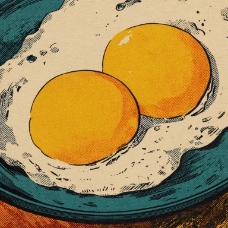

Doble Yema es una marca temporal y exclusiva inspirada en la rareza de encontrar dos yemas en un solo huevo.
Un evento que ocurre apenas en 1 de cada 1,000 huevos. Representa suerte, abundancia inesperada y momentos irrepetibles. Cada lanzamiento es limitado, único y fugaz, aparece, desaparece y no vuelve. Si lo encuentras, tuviste suerte.
Primer drop
EL CONCEPTO
LA DOBLE YEMA NO SE PUEDE PREDECIR, NO SE PUEDE FABRICAR, NO SE PUEDE GARANTIZAR. SOLO SUCEDE. Y CUANDO SUCEDE, ES UN MOMENTO DE SORPRESA PURA, UNA PEQUEÑA FORTUNA ESCONDIDA DONDE NO LA ESPERABAS.
DOBLE YEMA TRADUCE ESA SENSACIÓN EN PRODUCTOS. NO HAY CATÁLOGO PERMANENTE. NO HAY REPOSICIÓN. CADA LANZAMIENTO ES ÚNICO, NUMERADO Y FUGAZ. SI LO ENCUENTRAS, TUVISTE SUERTE. SI NO, YA PASÓ.